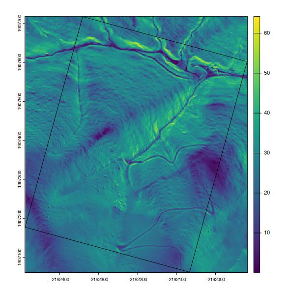
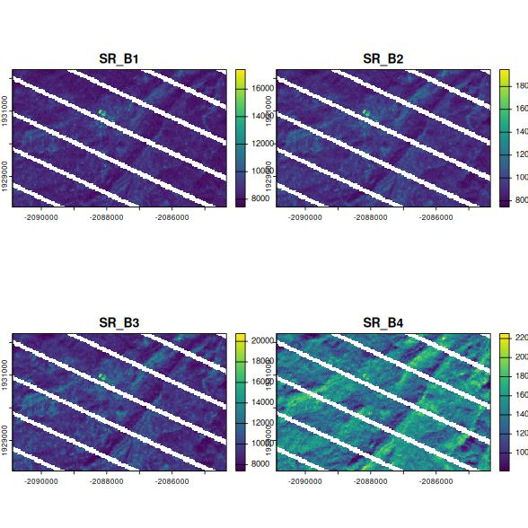

{rgeedim} supports search and download of Google Earth Engine imagery with Python module geedim by Dugal Harris. This package provides wrapper functions that make it more convenient to use geedim from R.
The rgeedim manual describes the R API. See the geedim manual for more information on Python API and command line interface.
Using geedim, images larger than the Image.getDownloadURL() size limit are split and downloaded as separate tiles, then re-assembled into a single GeoTIFF.
Installation
{rgeedim} is available on CRAN, and can be installed as follows:
install.packages("rgeedim")You can install the development version of {rgeedim} using {remotes}:
if (!require("remotes")) install.packages("remotes")
remotes::install_github("brownag/rgeedim")Dependencies
You will need Python 3 with the geedim module installed to use {rgeedim}.
Using gd_install()
gd_install() provides a simple wrapper around reticulate::py_install() that allows you to install dependencies using pip, virtual, or Conda environments.
# install with pip (with reticulate)
gd_install()
# install with pip (system() call)
gd_install(system = TRUE)
# use virtual environment with default name "r-reticulate"
gd_install(method = "virtualenv")
# use "conda" environment named "foo"
gd_install(method = "conda", envname = "foo")Using pip
You can install geedim with pip, for example:
python -m pip install geedimThis shell command assumes you have a Python 3 executable named (or aliased) as python on your PATH, or the command is being called from within an active Python virtual environment.
Using Miniconda
If you do not have a Python environment set up, an option that {reticulate} provides is reticulate::install_miniconda(). Once you install Miniconda, you can install packages into a conda environment such as "r-reticulate" (default). Customize the envname argument to create or add to a specific environment.
reticulate::install_miniconda()
reticulate::py_install("geedim")Troubleshooting
If using Python within RStudio for the first time, you may need to set your default interpreter in Tools >> Global Options… >> Python.
If you have trouble compiling dependency packages on Windows, you can take advantage of the unofficial pip wheels (binaries) prepared by by Christoph Gohlke: https://www.lfd.uci.edu/~gohlke/pythonlibs/. Note the name of the package and the specific version of Python you are installing for. Download the desired package/version and then call pip install your-package.whl.
How {rgeedim} Works
This example shows how to extract a Google Earth Engine asset by name for an arbitrary extent. The coordinates of the bounding box are expressed in WGS84 decimal degrees ("OGC:CRS84").
If this is your first time using any Google Earth Engine tools, authenticate with gd_authenticate(). You can pass arguments to use several different authorization methods.
Perhaps the easiest to use is auth_mode="notebook" in that does not rely on an existing GOOGLE_APPLICATION_CREDENTIALS file nor an installation of the gcloud CLI tools. However, the other options (using gcloud or a service account) are better for non-interactive or long-term use.
# short duration token
gd_authenticate(auth_mode = "notebook")
# longer duration (default); requires gcloud command-line tools
gd_authenticate(auth_mode = "gcloud")In each R session you will need to initialize the Earth Engine library
Then you can select an extent of interest. gd_bbox() is a simple function for specifying extents to {rgeedim} functions like gd_download().
r <- gd_bbox(
xmin = -120.6032,
xmax = -120.5377,
ymin = 38.0807,
ymax = 38.1043
)We will download the US NED CHILI (Continuous Heat-Insolation Load Index) https://developers.google.com/earth-engine/datasets/catalog/CSP_ERGo_1_0_US_CHILI. We specify an equal-area coordinate reference system (NAD83 Albers), bilinear resampling, and a resolution of 10 meters.
res <- 'CSP/ERGo/1_0/US/CHILI' |>
gd_image_from_id() |>
gd_download(
filename = 'image.tif',
region = r,
crs = "EPSG:5070",
resampling = "bilinear",
scale = 10, # scale=10: request ~10m resolution
overwrite = TRUE,
silent = FALSE
)We can inspect our results with {terra}. The resulting GeoTIFF has two layers, "constant" and "FILL_MASK". The former contains the data, and the latter contains a mask reflecting data availability (value = 1 where data are available).
library(terra)
#> terra 1.7.39
f <- rast(res)
f
#> class : SpatRaster
#> dimensions : 402, 618, 2 (nrow, ncol, nlyr)
#> resolution : 10, 10 (x, y)
#> extent : -2113880, -2107700, 1945580, 1949600 (xmin, xmax, ymin, ymax)
#> coord. ref. : NAD83 / Conus Albers (EPSG:5070)
#> source : image.tif
#> names : constant, FILL_MASK
plot(f[[1]])Example: Hillshade from DEM
This example demonstrates the download of a section of the USGS NED seamless 10m grid. This DEM is processed locally with {terra} to calculate some terrain derivatives (slope, aspect) and a hillshade.
library(rgeedim)
library(terra)
gd_initialize()
b <- gd_bbox(
xmin = -120.296,
xmax = -120.227,
ymin = 37.9824,
ymax = 38.0071
)
## hillshade example
# download 10m NED DEM in AEA
x <- "USGS/NED" |>
gd_image_from_id() |>
gd_download(
region = b,
scale = 10,
crs = "EPSG:5070",
resampling = "bilinear",
filename = "image.tif",
bands = list("elevation"),
overwrite = TRUE,
silent = FALSE
)
dem <- rast(x)$elevation
# calculate slope, aspect, and hillshade with terra
slp <- terrain(dem, "slope", unit = "radians")
asp <- terrain(dem, "aspect", unit = "radians")
hsd <- shade(slp, asp)
# compare elevation v.s. hillshade
plot(c(dem, hillshade = hsd))Subsets of the "USGS/NED" image result in multi-band GeoTIFF with "elevation" and "FILL_MASK" bands. In the contiguous US we know the DEM is continuous so the FILL_MASK is not that useful. With geedim >1.7 we retrieve only the "elevation" band by specifying argument bands = list("elevation"). This cuts the raw image size that we need to download in half.
Example: LiDAR Slope Map
This example demonstrates how to access 1-meter LiDAR data from the USGS 3D Elevation Program (3DEP).
There are other methods to derive an area of interest from existing spatial data sources, here we use gd_region() on a SpatVector object and pass resulting object to several functions that require a processing extent.
LiDAR data are not available everywhere, and are generally available as collections of (tiled) layers. Therefore we use gd_search() to narrow down the options. The small sample extent covers only one tile. Additional filters on date and data quality are also possible with gd_search(). A key step in this process is the use of gd_composite() to resample the component images of interest from the collection on the server-side.
library(rgeedim)
library(terra)
# search and download from USGS 1m lidar data collection
gd_initialize()
# wkt->SpatVector->GeoJSON
b <- 'POLYGON((-121.355 37.56,-121.355 37.555,
-121.35 37.555,-121.35 37.56,
-121.355 37.56))' |>
vect(crs = "OGC:CRS84")
# create a GeoJSON-like list from a SpatVector object
# (most rgeedim functions arguments for spatial inputs do this automatically)
r <- gd_region(b)
# search collection for an area of interest
a <- "USGS/3DEP/1m" |>
gd_collection_from_name() |>
gd_search(region = r)
# inspect individual image metadata in the collection
gd_properties(a)
#> id
#> 1 USGS/3DEP/1m/USGS_1M_10_x64y416_CA_UpperSouthAmerican_Eldorado_2019_B19
#> date
#> 1 2006-01-01
# resampling images as part of composite; before download
x <- a |>
gd_composite(resampling = "bilinear") |>
gd_download(region = r,
crs = "EPSG:5070",
scale = 1,
filename = "image.tif",
overwrite = TRUE,
silent = FALSE) |>
rast()
# inspect
plot(terra::terrain(x$elevation))
plot(project(b, x), add = TRUE)
Example: Landsat-7 cloud/shadow-free composite
This example demonstrates download of a Landsat-7 cloud/shadow-free composite image. A collection is created from the NASA/USGS Landsat 7 Level 2, Collection 2, Tier 1.
This example is based on a tutorial in the geedim manual.
library(rgeedim)
library(terra)
gd_initialize()
b <- gd_bbox(
xmin = -120.296,
xmax = -120.227,
ymin = 37.9824,
ymax = 38.0071
)
## landsat example
# search collection for date range and minimum data fill (85%)
x <- 'LANDSAT/LE07/C02/T1_L2' |>
gd_collection_from_name() |>
gd_search(
start_date = '2020-11-01',
end_date = '2021-02-28',
region = b,
cloudless_portion = 85
)
# inspect individual image metadata in the collection
gd_properties(x)
#> id date fill cloudless grmse
#> 1 LANDSAT/LE07/C02/T1_L2/LE07_043034_20201130 2020-11-30 86.41 99.98 4.92
#> 2 LANDSAT/LE07/C02/T1_L2/LE07_043034_20210101 2021-01-01 86.85 98.89 4.79
#> 3 LANDSAT/LE07/C02/T1_L2/LE07_043034_20210117 2021-01-17 86.05 99.93 5.44
#> 4 LANDSAT/LE07/C02/T1_L2/LE07_043034_20210218 2021-02-18 85.66 99.91 5.73
#> saa sea
#> 1 151.45 25.21
#> 2 148.07 22.47
#> 3 145.16 23.71
#> 4 138.46 30.91
# download a single image, no compositing
y <- gd_properties(x)$id[1] |>
gd_image_from_id() |>
gd_download(
filename = "image.tif",
region = b,
scale = 30,
crs = 'EPSG:5070',
dtype = 'uint16',
overwrite = TRUE,
silent = FALSE
)
plot(rast(y)[[1:4]])
Now we have several images of interest, and also major issues with some of the inputs. In this case there were failures of sensors on the Landsat satellite, but other data gaps may occur due to masked cloudy areas or due to patchy coverage of the source product.
# create composite landsat image near December 1st, 2020 and download
# using q-mosaic method.
z <- x |>
gd_composite(
method = "q-mosaic",
date = '2020-12-01'
) |>
gd_download(
filename = "image.tif",
region = b,
scale = 30,
crs = 'EPSG:5070',
dtype = 'uint16',
overwrite = TRUE,
silent = FALSE
)
plot(rast(z)[[1:4]])The "q-mosaic" method produces a composite (largely) free of artifacts in this case; this is because it prioritizes pixels with higher distance from clouds to fill in the gaps. Other methods are available such as "medoid"; this may give better results when compositing more contrasting inputs such as several dates over a time period where vegetation or other cover changes appreciably.